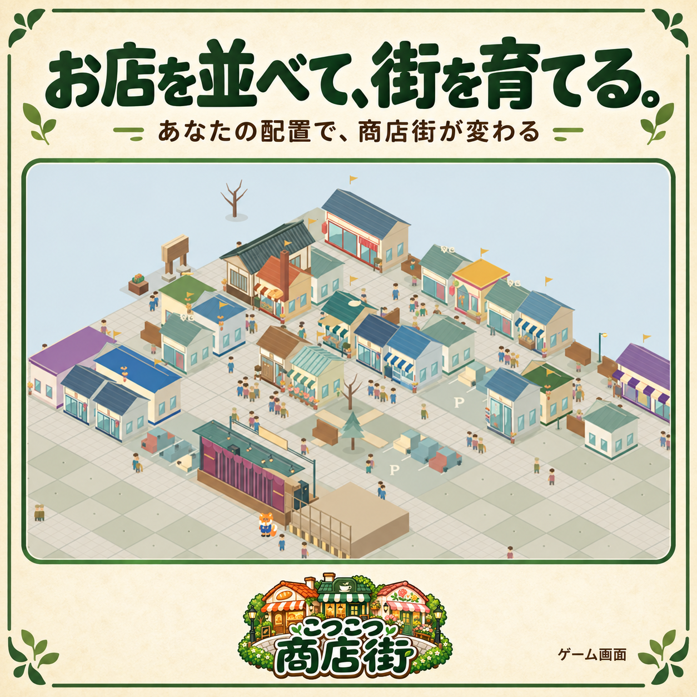
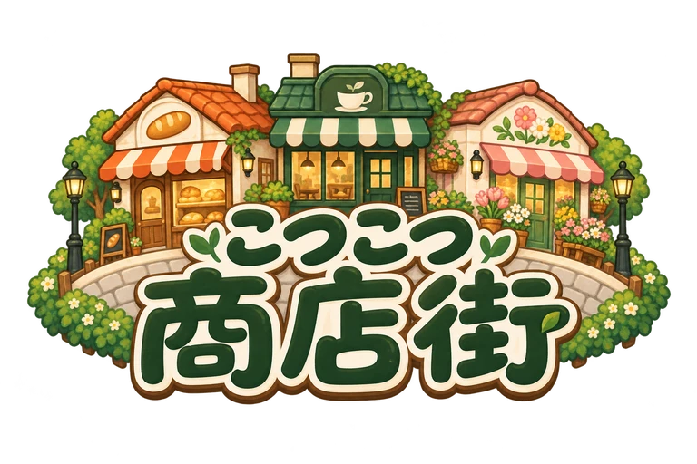
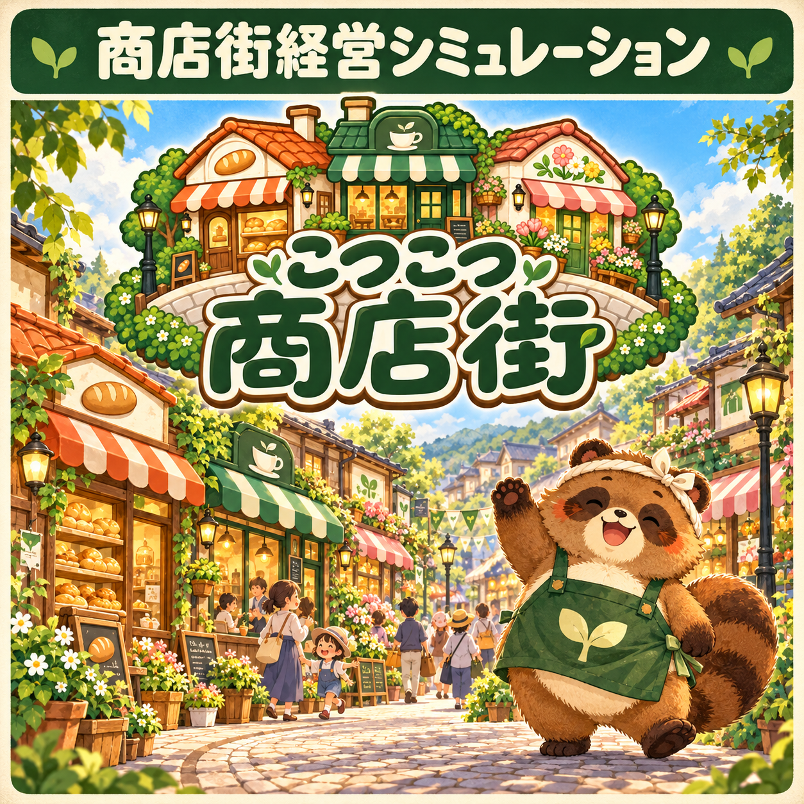
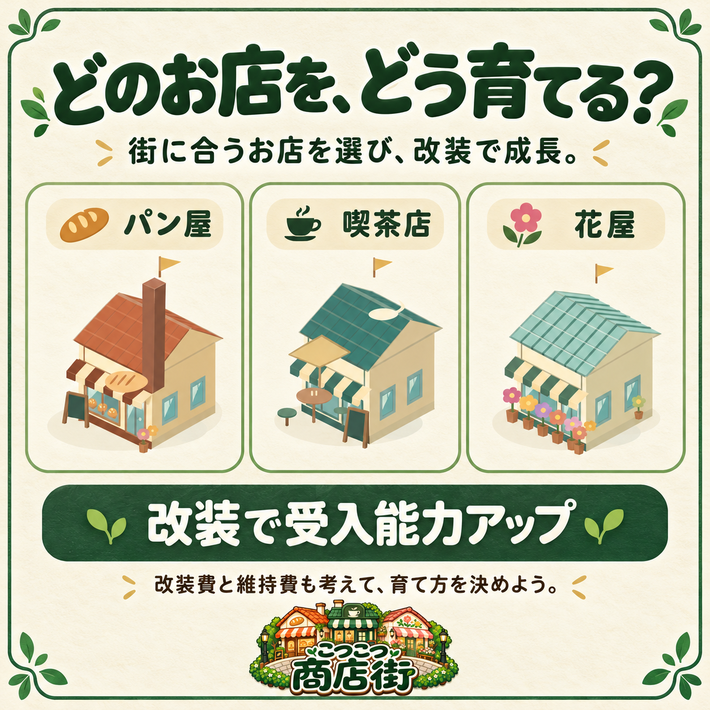
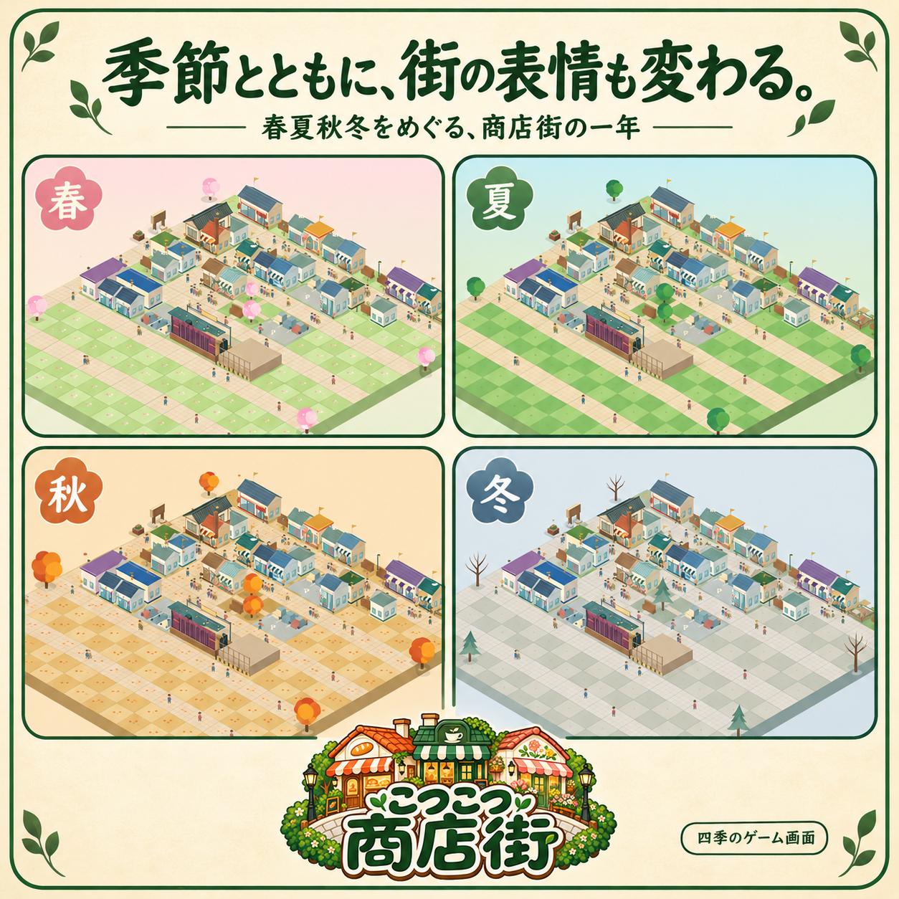

お店と道路で、
自分の街をつくる。
どこにお店を置き、どこに道を通すか。配置を考えながら、自分だけの商店街をつくっていきます。

商店街経営シミュレーション
10年で、もう一度にぎわう商店街へ。
お店や道路を配置し、収支と満足度を見ながら商店街を再生。 「翌月へ」を押すまで時間は進まないので、 自分のペースで街づくりを楽しめます。
製品版 680円 ／ PC向けダウンロード版

街をつくる、育てる、見守る。

どこにお店を置き、どこに道を通すか。配置を考えながら、自分だけの商店街をつくっていきます。

改装するお店や、品ぞろえをどうするか。収支と満足度を見比べ、住民の要望にも耳を傾けながら、経営方針を考えます。

春夏秋冬で表情を変える商店街。季節の企画を考え、街に誕生するマスコットとともに、にぎわいを育てていきましょう。
まずは、自分の手で街づくり。
マスコット誕生まで遊べます。
お店を並べ、一か月ずつ街を育てる楽しさを、まずは体験してみませんか。
専用ページでブラウザー体験版が開きます。
体験版の進行は製品版へ自動では引き継がれません。
PCで楽しむダウンロード版
上記はPC向け製品版の動作確認情報です。すべての環境での動作を保証するものではありません。
BOOTHの販売ページで製品版を購入し、ZIPファイルをダウンロードします。
ダウンロードしたZIPファイルを展開します。
展開したフォルダー内の「こつこつ商店街.html」をChromeまたはFirefoxで開きます。
ダウンロード後は、オフラインで遊べます。
はい。PC向け製品版は、購入してダウンロードした後、オフラインで遊べます。
ブラウザー内に自動保存・手動保存でき、最大5つの街を保存できます。別の端末などへ移すときは、保存ファイルを書き出し、移行先の製品版で読み込んでください。
はい。本編は10年以内の商店街再生を目指します。クリア後は、100年目の終了まで経営を続けられます。
マスコット誕生まで遊べます。詳しくは無料体験版のご案内をご覧ください。